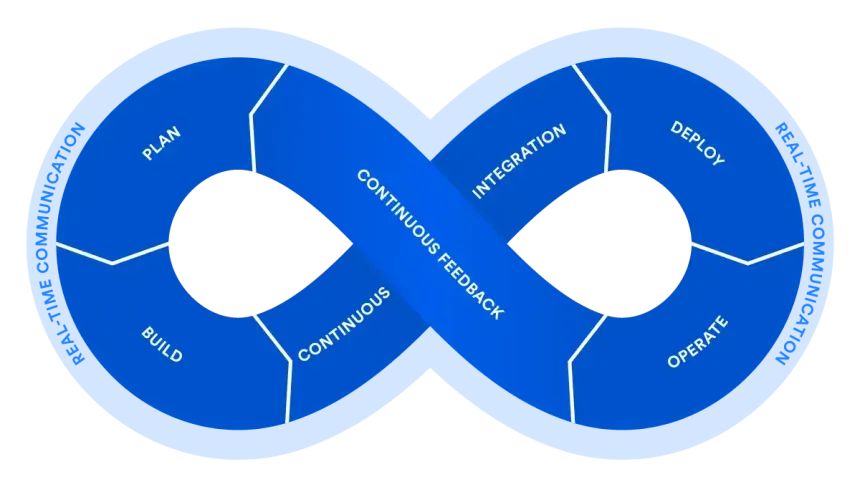
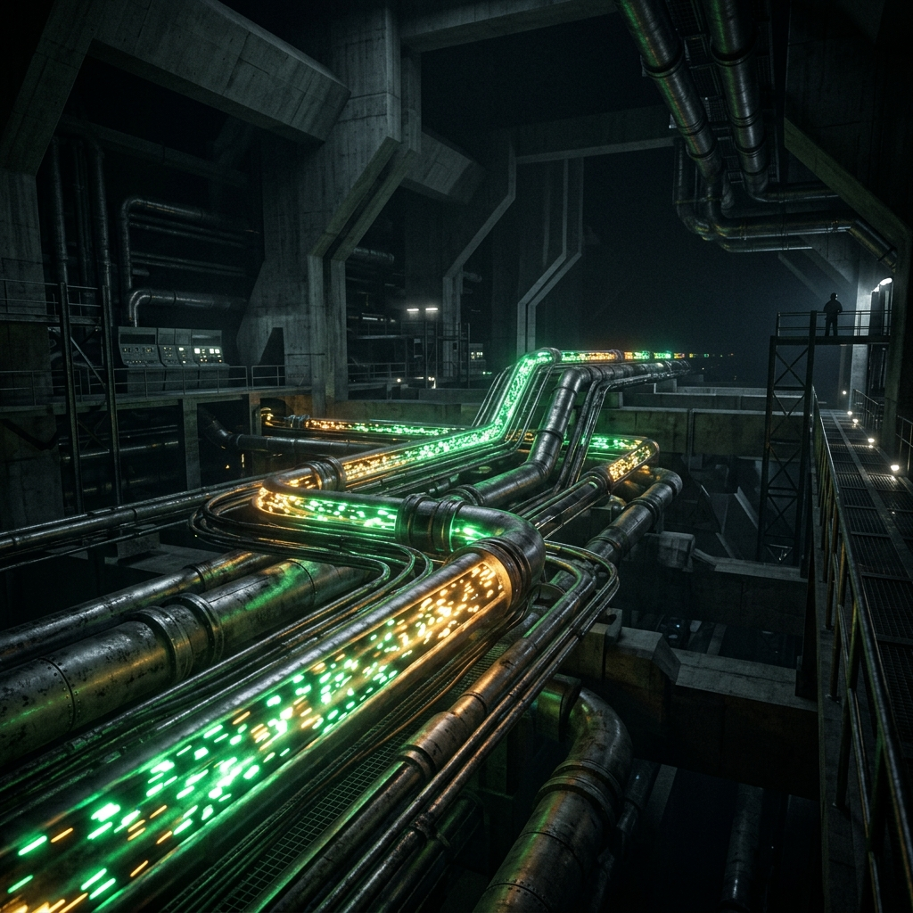
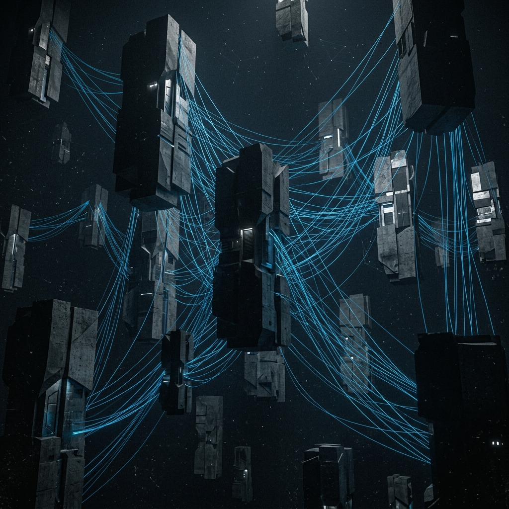

Introduction to DevOps & Ecosystem
DevOps = Development + Operations. A culture, movement, and practice emphasizing collaboration between software developers and IT operations.
- CALMS Framework: Culture, Automation, Lean, Measurement, Sharing
- Delivery Pipeline: Plan → Code → Build → Test → Release → Deploy → Operate → Monitor (continuous loop)
- Ecosystem Tools: Git (VCS) · Jenkins (CI) · Selenium (CT) · Docker + Kubernetes (CD) · Puppet + Ansible (CM) · Nagios (Monitoring) · AWS/Azure/GCP (Cloud)
Define DevOps and list its core principles.
3 MARKSDevOps is a collaborative approach integrating software development (Dev) and IT operations (Ops) to shorten the software development life cycle. Core principles follow the CALMS framework: Culture (shared responsibility), Automation (reduce manual tasks), Lean (eliminate waste), Measurement (track everything), and Sharing (open communication). The goal is faster, reliable delivery of software.
What are the key skills required in the DevOps domain?
3 MARKSKey DevOps skills:
- Version control – Git
- CI/CD tools – Jenkins, GitLab CI
- Containerization – Docker, Kubernetes
- Configuration management – Puppet, Ansible, Chef
- Cloud platforms – AWS, Azure, GCP
- Scripting – Python, Bash
- Monitoring – Nagios, Prometheus
- Agile/Scrum practices.
Explain the DevOps delivery pipeline and its stages.
5 MARKSThe DevOps delivery pipeline is a set of automated processes that move code from development to production:

- Plan – Define features, tasks (Jira)
- Code – Developers write and commit (Git)
- Build – Compile automatically (Maven, Gradle)
- Test – Automated testing (Selenium, JUnit)
- Release – Approve version for deployment
- Deploy – Push to production (Docker, Kubernetes)
- Operate – Manage infrastructure
- Monitor – Observe performance (Nagios, Grafana)
Each stage feeds back into the next, enabling a continuous loop of rapid, reliable delivery.
Describe DevOps market trends and the demand for DevOps skills.
5 MARKSCurrent trends:
- Shift to cloud-native DevOps on AWS/Azure/GCP
- GitOps — Git as single source of truth for infrastructure
- DevSecOps — integrating security into the pipeline
- AIOps — AI for predictive monitoring
- Microservices and containerization becoming standard.
Companies seek engineers proficient in CI/CD, containers, and cloud — DevOps engineers command premium salaries due to cross-functional expertise.
What is the DevOps ecosystem? Explain the key tools used across the DevOps lifecycle.
8 MARKSThe DevOps ecosystem is a collection of tools and practices supporting the entire software delivery lifecycle:
- Source Control: Git, GitHub, Bitbucket
- CI Tools: Jenkins, GitLab CI
- Continuous Testing: Selenium, JUnit, TestNG
- Containerization: Docker (packaging) + Kubernetes (orchestration)
- Configuration Management: Puppet, Ansible, Chef
- Monitoring: Nagios, Prometheus, Grafana
- Artifact Repository: Nexus, JFrog Artifactory
- Cloud Platforms: AWS (CodePipeline, ECS), Azure (DevOps, AKS), GCP (Cloud Build, GKE)
These tools form an integrated toolchain that supports automation, collaboration, and rapid feedback.
Explain DevOps culture and its evolution from traditional software development models. How does it differ from Waterfall and Agile?
10 MARKSTraditional Waterfall: sequential approach (requirements → design → dev → test → deploy), taking months/years. Clear wall between Dev and Ops causing "works on my machine" problem.
Agile improved this with iterative sprints but still treated deployment separately.
DevOps Evolution:
- 2009: Patrick Debois coined "DevOps" at Agile Conference
- 2010s: Tools like Jenkins, Docker, Puppet popularized automation
- Today: Cloud-native DevOps is mainstream
Key Differences:
- Waterfall vs DevOps: linear/slow/siloed vs continuous/fast/collaborative
- Agile vs DevOps: iterative development vs Agile + continuous delivery and operations
DevOps culture requires:
- Shared ownership — Dev and Ops both responsible for production
- Blameless postmortems — focus on learning, not blame
- Automation-first mindset
- Continuous improvement through feedback loops
- Transparency — shared dashboards, metrics
Business benefits (DORA metrics): 200x more frequent deployments · 24x faster recovery from failures · 3x lower change failure rate. Companies like Netflix, Amazon, and Google deploy thousands of times per day.
Version Control & Agile Practices
- Git Essential Commands: `git init` · `git clone
` · `git add .` · `git commit -m "msg"` · `git push origin main` · `git pull` · `git branch ` · `git checkout ` · `git merge ` · `git status` · `git log` - Branching Strategies: Feature Branch · Gitflow (main/develop/feature/release/hotfix) · Trunk-Based Development
- Merge types: Fast-forward · 3-way merge · Rebase
- Agile Principles: Individuals over processes · Working software over docs · Customer collaboration · Responding to change
- Scrum ceremonies: Sprint Planning · Daily Standup · Sprint Review · Retrospective
What is version control? Differentiate between centralized and distributed VCS.
3 MARKSVersion Control System (VCS) tracks changes to files over time, allowing multiple people to collaborate and revert to previous versions.
- Centralized VCS (SVN): single central server; developers check out/in. Risk: single point of failure.
- Distributed VCS (Git): every developer has a full local copy of entire history. Faster, works offline, no single point of failure.
List and explain five essential Git commands.
3 MARKS- `git init` — initializes a new Git repository
- `git clone
` — copies a remote repository to local machine - `git add .` — stages all modified files for next commit
- `git commit -m 'message'` — saves staged changes with a message
- `git push origin main` — uploads local commits to remote repository
Explain Git branching strategies used in team-based development.
5 MARKS- Feature Branch Workflow: each feature/bug gets its own branch, merged into main when done.
- Gitflow: main (production) · develop (integration) · feature/* · release/* · hotfix/*
- Trunk-Based Development: all developers commit to one main branch using feature flags. Used by Google and Facebook.
Best practice: small, short-lived branches merged frequently reduce merge conflicts and enable CI.
How do you resolve merge conflicts in Git?
5 MARKSA merge conflict occurs when two branches modify the same part of a file differently.
Steps:
- `git merge
` — attempt the merge - Git marks conflicts: `<<<<<<< HEAD` / your change / `=======` / their change / `>>>>>>> feature-branch`
- Manually edit the file to keep correct version
- `git add
` — mark as resolved - `git commit` — complete the merge
Tools: VS Code, IntelliJ, `git mergetool` provide visual conflict resolution.
Explain Git workflows. Compare Gitflow vs Trunk-Based Development.
8 MARKSGitflow (Vincent Driessen): branches: main, develop, feature, release, hotfix. Structured, clear release cycle, good for versioned products. Cons: complex, long-lived branches, slower CI.
Trunk-Based Development: all commits go to trunk/main. Feature flags hide incomplete features. Short-lived branches (< 1 day). Enables true CI, fast feedback, fewer merge issues.
GitHub Flow: simplified — main branch + feature branches + pull requests. Deploy from main directly. Best for web apps with continuous deployment.
Choice: large enterprise products with scheduled releases → Gitflow. SaaS products with continuous delivery → Trunk-based.
Explain Agile software development and its integration with DevOps. Describe Scrum framework in detail.
10 MARKSAgile (Agile Manifesto, 2001) values: Individuals and interactions · Working software · Customer collaboration · Responding to change.
Scrum Roles: Product Owner (defines backlog) · Scrum Master (facilitates, removes blockers) · Development Team (cross-functional, 3–9 people)
Scrum Artifacts: Product Backlog · Sprint Backlog · Increment (shippable product)
Scrum Ceremonies: Sprint Planning · Daily Standup (15 min) · Sprint Review (demo to stakeholders) · Retrospective (process improvement)
Agile + DevOps Integration: Agile drives development iteration; DevOps drives deployment automation. CI/CD pipelines automate the Agile "definition of done" (code → tested → deployed). Sprint deliverables automatically flow through the DevOps pipeline.
Result: Organizations like Spotify (Squads, Tribes model) deploy hundreds of times per day with small autonomous teams.
Continuous Integration with Jenkins
- CI: Practice of automatically building and testing code on every commit to the shared repository.
- Jenkins Architecture: Master (UI, job scheduling, plugins) + Agents/Slaves (execute builds)
- Jenkinsfile example: `pipeline { agent any; stages { stage('Build') { steps { sh 'mvn compile' } } stage('Test') { steps { sh 'mvn test' } } } }`
- Key Plugins: Git Plugin · Maven Plugin · Pipeline Plugin · Blue Ocean UI
What is Continuous Integration? State its key benefits.
3 MARKSCI is a DevOps practice where developers frequently merge code into a shared repository (multiple times/day). Each merge triggers automated build and test.
Benefits:
- Early detection of integration bugs
- Reduces "integration hell"
- Always have a working build
- Faster feedback
- Improved code quality.
What is Jenkins? Explain its architecture.
3 MARKSJenkins is an open-source automation server for CI/CD. Master-Agent architecture:
- Master: hosts web UI, manages configs, schedules jobs, distributes work
- Agents (Slaves): machines that execute build jobs, connect via SSH or JNLP
Enables parallel builds. Extensible through 1800+ plugins.
Explain the CI pipeline workflow with Jenkins and Git integration.
5 MARKS- Developer commits code to Git
- Git webhook notifies Jenkins
- Jenkins pulls latest code (Git plugin)
- Build Stage: `mvn compile`
- Test Stage: `mvn test`, JUnit reports
- Report Stage: test reports, coverage (JaCoCo)
- Artifact Stage: package JAR/WAR/Docker image
- Notification: email/Slack on pass/fail
Entire flow defined in Jenkinsfile stored in Git (Pipeline as Code).
How do you configure and execute a basic CI pipeline in Jenkins? Explain with Jenkinsfile syntax.
8 MARKSSetup: Install Jenkins (port 8080) → install Git + Pipeline + Maven plugins → configure JDK/Maven paths → create new Pipeline job.

Jenkinsfile (Declarative):
pipeline {
agent any
tools { maven 'Maven3' }
stages {
stage('Checkout') { steps { git 'https://github.com/user/repo.git' } }
stage('Build') { steps { sh 'mvn clean compile' } }
stage('Test') { steps { sh 'mvn test' }
post { always { junit 'target/surefire-reports/*.xml' } } }
stage('Package') { steps { sh 'mvn package' } }
}
post {
success { echo 'Build Successful!' }
failure { mail to:'dev@company.com', subject:'Build Failed' }
}
}
Webhook: GitHub → Settings → Webhooks → Jenkins URL/github-webhook/
What is Continuous Integration? Explain the complete CI workflow, Jenkins features, and how it supports DevOps practices.
10 MARKSCI Principles: single source repository · automate the build · self-testing build · every commit triggers build · fix broken builds immediately · keep build fast (< 10 min)
Jenkins Features:
- Web-based UI
- Master-Agent distributed architecture
- 1800+ plugins (Docker, Kubernetes, SonarQube, Slack)
- Pipeline as Code (Jenkinsfile in Git)
- Blue Ocean: modern pipeline visualization UI
- Role-based access control
- Build triggers: webhooks, cron, SCM polling, manual
- Build history and test trend analysis
Complete CI Workflow:
- Developer writes code, runs local tests
- Commits to Git feature branch
- Creates Pull Request → peer review
- Merge to main → webhook fires Jenkins
- Jenkins: Clone → Build → Unit Test → Integration Test → Code Quality (SonarQube) → Package
- Artifacts stored in Nexus/Artifactory
- Pass: notify team; Fail: immediate alert
Business value: bugs caught in CI cost 10x less to fix than in production. DORA research: high-performing teams have CI as foundational practice.
Continuous Testing & Quality Assurance
- Selenium Components: Selenium IDE · Selenium RC (deprecated) · Selenium WebDriver · Selenium Grid
- WebDriver Architecture: Test Script → WebDriver API → Browser Driver (ChromeDriver/GeckoDriver) → Browser
- Testing Pyramid: Unit Tests (many, fast) → Integration Tests → UI/E2E Tests (few, slow)
- Key Tools: Selenium (UI) · JUnit/TestNG (unit) · Cucumber (BDD) · Postman (API) · JMeter (performance)
Why is Continuous Testing important in DevOps?
3 MARKSIn DevOps, code is deployed frequently. CT ensures quality at every pipeline stage without slowing delivery. Benefits:
- Immediate feedback after each commit
- Catches regressions early
- Enables confidence in continuous deployment
- Reduces manual testing effort
- Maintains "always shippable" codebase.
What is Selenium WebDriver? Explain its architecture briefly.
3 MARKSSelenium WebDriver automates web browser interactions for testing.
Architecture: Test Script (Java/Python/C#) → WebDriver API (JSON Wire Protocol / W3C) → Browser Driver (ChromeDriver/GeckoDriver) → Browser
Compare Selenium with other web testing tools. When is Selenium the best choice?
5 MARKS- Selenium vs Cypress: Selenium = all browsers + all languages; Cypress = JS-only, Chrome/Firefox, better DX
- Selenium vs Playwright (Microsoft): supports Chromium/Firefox/WebKit, auto-wait, better parallel testing
- Selenium vs QTP/UFT: Selenium = free/open-source/web-only; QTP = commercial/web+desktop
Choose Selenium when: cross-browser testing required · team uses multiple languages · Jenkins CI integration needed · Selenium Grid for parallel testing across devices.
Explain Selenium components and how automated test execution works in DevOps.
8 MARKS- Selenium IDE: browser extension, record-and-playback, good for beginners
- Selenium WebDriver: core automation engine, direct browser communication via native APIs
- Selenium Grid: Hub (distributes tests) + Nodes (machines with specific browser/OS). Enables parallel execution.
WebDriver flow: Test Code → WebDriver Interface → Remote WebDriver → Browser Driver → Browser
CI Integration: Tests in Git → Jenkins triggers on build → Selenium Grid runs tests in parallel → JUnit XML results → Jenkins displays trends → Failed tests block deployment
Testing Pyramid: Unit (70%, fast) · Integration (20%) · UI/E2E Selenium (10%, slowest, runs last)
What is the role of testing in DevOps? Explain Continuous Testing strategy, tools, and CI/CD integration.
10 MARKS"Shift Left" testing: quality activity woven throughout the pipeline, not just at the end.
Testing layers:
- Unit Testing: JUnit, pytest, Mocha — every commit, 80%+ coverage target
- Integration Testing: Spring Test, REST Assured
- UI/Functional (Selenium): E2E workflows in staging
- Performance: JMeter, Gatling — load and stress tests
- Security (DevSecOps): OWASP ZAP (DAST), SonarQube (SAST)
- Acceptance (BDD): Cucumber + Gherkin (Given/When/Then)
CI/CD Pipeline flow:
Commit → Unit Tests (1 min) → Code Quality (SonarQube) → Integration Tests (5 min) → Build Artifact → Deploy to Staging → Selenium E2E (15 min) → Performance Tests → Deploy to Production
Key metrics: test pass rate · code coverage % · test execution time · defect escape rate
Business impact: mature CT practices → 10x fewer production incidents, 50% lower cost of quality.
Continuous Deployment, Docker & Kubernetes
- Docker Commands: `docker pull` · `docker build -t name .` · `docker run -d -p 8080:8080 name` · `docker ps` · `docker stop` · `docker push` · `docker images`
- Dockerfile order: FROM → WORKDIR → COPY → RUN → EXPOSE → CMD
- Kubernetes Objects: Pod → ReplicaSet → Deployment → Service → Ingress → Namespace
- kubectl: `kubectl apply -f deploy.yaml` · `kubectl get pods` · `kubectl scale` · `kubectl describe pod`
Differentiate between virtual machines and containers.
3 MARKS- VMs: virtualize entire hardware (hypervisor). Each VM has full OS (GBs). Slow start (minutes). High resource overhead.
- Containers: virtualize at OS level via Docker Engine. Share host OS kernel. Lightweight (MBs). Start in seconds. Isolated via namespaces and cgroups.
Key difference: VMs isolate at hardware level; containers isolate at OS process level. Containers are faster, more portable, resource-efficient.
Explain the Docker container lifecycle.
3 MARKS- Create: `docker create` (created, not running)
- Start: `docker start` (running)
- Pause: `docker pause` (process frozen)
- Stop: `docker stop` (SIGTERM → SIGKILL → exited)
- Kill: `docker kill` (immediate SIGKILL)
- Remove: `docker rm` (deleted from disk)
Images are immutable; containers are running instances of images.
Explain Docker architecture and how images are built and published.
5 MARKSArchitecture:
- Docker Client: CLI communicates with Docker Daemon via REST API
- Docker Daemon (dockerd): manages images, containers, networks, volumes
- Docker Registry: stores images (Docker Hub public; AWS ECR/Azure ACR private)
Dockerfile example:
FROM openjdk:11
WORKDIR /app
COPY target/app.jar .
EXPOSE 8080
CMD ["java", "-jar", "app.jar"]
Build: `docker build -t myapp:1.0 .`
Tag: `docker tag myapp:1.0 username/myapp:1.0`
Push: `docker push username/myapp:1.0`
Pull & run anywhere: `docker run -d -p 8080:8080 username/myapp:1.0`
Ensures "works on my machine = works everywhere."
Explain Kubernetes architecture and how it orchestrates containers.
8 MARKSControl Plane (Master):
- API Server: entry point for all kubectl commands
- etcd: key-value store for cluster state
- Scheduler: assigns pods to nodes based on resources
- Controller Manager: maintains desired state
Worker Nodes:
- kubelet: agent communicating with master
- kube-proxy: handles network routing
- Container Runtime: Docker/containerd runs containers
Key Objects:
- Pod: smallest unit, one or more containers sharing network/storage
- ReplicaSet: ensures N replicas always running
- Deployment: manages ReplicaSets, enables rolling updates
- Service: stable network endpoint (ClusterIP, NodePort, LoadBalancer)
- Ingress: HTTP routing, SSL termination
- ConfigMap/Secret: configuration injection
- Namespace: logical cluster isolation
Example Deployment YAML:
apiVersion: apps/v1
kind: Deployment
metadata: {name: myapp}
spec:
replicas: 3
selector: {matchLabels: {app: myapp}}
template:
spec:
containers:
- name: myapp
image: myapp:1.0
ports: [{containerPort: 8080}]
Scaling: `kubectl scale deployment myapp --replicas=10`
Explain Docker and Kubernetes together as a complete container ecosystem for Continuous Deployment.
10 MARKSDocker's Role: package app + dependencies in immutable image · Dockerfile defines environment · same image runs in dev/staging/prod
Kubernetes' Role: runs Docker containers at scale · self-healing (restarts crashed containers) · horizontal scaling · rolling updates with zero downtime · load balancing · service discovery
Full CD Pipeline:
Code commit → Jenkins CI → Build Docker Image → Push to ECR → K8s Deployment → Rolling Update → Live
Deployment Strategies:
- Rolling Update (default): replace old pods gradually, zero downtime
- Blue-Green: two environments, instant traffic switch
- Canary: 5% traffic to new version → test → 100%
Kubernetes Features: HPA auto-scaling · Cluster autoscaler · Persistent Volumes · RBAC · Network Policies · Helm package manager
Managed K8s: AWS EKS · Azure AKS · GCP GKE
Production example: Netflix runs millions of containers on K8s, deploying hundreds of services multiple times per day.
Configuration Management & Continuous Monitoring
- Puppet: Master-Agent model. Master holds manifests (.pp files). Agents pull config every 30 min. Language: Puppet DSL.
- Puppet Resource examples: `file { '/etc/motd': ensure => present }` · `package { 'nginx': ensure => installed }` · `service { 'nginx': ensure => running, enable => true }`
- Nagios: Monitors hosts and services. NRPE runs checks on remote hosts. Alert states: OK / WARNING / CRITICAL / UNKNOWN
What is Configuration Management? Why is it important in DevOps?
3 MARKSCM is the process of systematically managing and maintaining the desired state of infrastructure and software. In DevOps, CM enables Infrastructure as Code (IaC) — treating server config like source code.
Importance:
- Consistency — eliminate config drift
- Automation — provision hundreds of servers automatically
- Version control — track infra changes in Git
- Self-healing — enforce desired state continuously
- Disaster recovery — rebuild infrastructure from code.
Tools: Puppet, Ansible, Chef, SaltStack.
Explain Puppet's master-agent architecture.
3 MARKSPull-based architecture:
- Puppet Master: central server holding manifests, certificates, modules
- Puppet Agent: installed on every managed node; every 30 min agents connect to master, request catalog (desired config), apply it
Process: Agent sends facts (hostname, OS, IP) → Master compiles catalog → Agent applies resources → Agent sends report back
Communication: SSL-encrypted. All nodes stay in desired state automatically.
Write example Puppet manifests and explain how Puppet modules work.
5 MARKS
# site.pp — Install and start nginx
package { 'nginx': ensure => installed }
service { 'nginx': ensure => running, enable => true, require => Package['nginx'] }
file { '/etc/nginx/conf.d/myapp.conf':
ensure => present,
content => template('nginx/myapp.conf.erb'),
notify => Service['nginx'],
}
Module structure: `manifests/init.pp` · `templates/` · `files/` · `tests/`
Node Classification:
node 'webserver01.company.com' { include nginx; include myapp }
node 'dbserver01.company.com' { include mysql }
Install community modules: `puppet module install puppetlabs-nginx`
Explain Nagios architecture and how continuous monitoring is implemented.
8 MARKSNagios Architecture:
- Nagios Core: central monitoring engine
- Plugins: scripts that check specific services (150+ built-in)
- NRPE: daemon on remote hosts running local checks
- Web UI: browser dashboard (port 80)
States: OK (0) · WARNING (1) · CRITICAL (2) · UNKNOWN (3)
NRPE Setup:
- Install on remote: `apt install nagios-nrpe-server nagios-plugins`
- Configure `/etc/nagios/nrpe.cfg`: `allowed_hosts=nagios-ip` · `command[check_disk]=/usr/lib/nagios/plugins/check_disk -w 20% -c 10%`
- On Nagios server define host and service using `check_nrpe!check_disk`
- `systemctl reload nagios`
Notification:
define contact { contact_name admin; email admin@company.com; service_notification_commands notify-service-by-email }
Nagios monitors: HTTP response · disk space · CPU load · memory · MySQL · SMTP · SSH · custom apps
Explain Configuration Management with Puppet and Continuous Monitoring with Nagios as part of the DevOps pipeline.
10 MARKSCM and Monitoring form the "Operate and Monitor" stages of DevOps.
Puppet:
Why: manual config doesn't scale; configuration drift causes inconsistency.
Installation: `apt install puppetmaster` (master) + `apt install puppet` (agents) → sign certs: `puppet cert sign --all`
Workflow: write manifest → `puppet parser validate` → push to master → agents pull and apply every 30 min
Advanced: Hiera (data separation) · PuppetDB (facts and reports) · R10K (environment-based code deployment) · Puppet Enterprise (GUI)
Nagios:
Why: detect failures before users do · track trends · alert on-call engineers · SLA tracking
Key Features: scheduled checks · dependency tracking · escalation policies (L1 → L2) · acknowledgement · downtime scheduling · performance graphs (PNP4Nagios/Grafana)
Key Plugins: `check_http` · `check_ping` · `check_disk` · `check_load` · `check_mysql` · custom scripts returning 0/1/2/3
Modern alternatives: Prometheus + Grafana (metrics) · ELK Stack (logs) · Datadog (SaaS)
Integrated Pipeline:
Puppet provisions servers consistently → App deployed via Docker/K8s → Nagios monitors health → Alerts engineers → Fix applied → CM enforces fix to all servers → Pipeline continues.
Cloud Platforms & DevOps Services
- AWS: CodeCommit (Git) · CodeBuild (CI) · CodeDeploy (CD) · CodePipeline (orchestration) · ECR (container registry) · EKS (Kubernetes)
- Azure: Azure Repos (Git) · Azure Pipelines (CI/CD) · Azure Container Registry · AKS (Kubernetes) · Azure Monitor · Azure Boards (Agile)
- GCP: Cloud Source Repositories · Cloud Build · Cloud Deploy · Artifact Registry · GKE · Cloud Monitoring
- Cloud models: IaaS (EC2, VMs) · PaaS (Elastic Beanstalk, App Service) · SaaS (Gmail, Office365)
What are cloud computing service models? Explain IaaS, PaaS, and SaaS with examples.
3 MARKS- IaaS: virtualized compute, storage, network. User manages OS, runtime, apps. Examples: AWS EC2, Azure VMs, GCP Compute Engine. Use case: lift-and-shift migrations.
- PaaS: platform for developing/running apps without managing infrastructure. Examples: AWS Elastic Beanstalk, Azure App Service, GCP App Engine. Use case: focus on code, not infra.
- SaaS: complete software delivered over internet. Examples: Gmail, Salesforce, Microsoft 365. Use case: end users, no infra management.
What are the advantages of implementing DevOps on cloud?
3 MARKS- Elasticity — scale resources up/down automatically
- Managed services — AWS CodePipeline/Azure Pipelines handle CI/CD infra
- Global deployment — multiple regions in minutes
- Cost optimization — pay-as-you-go
- Built-in security (IAM, VPC, encryption)
- Integrated monitoring (CloudWatch, Azure Monitor)
- Faster time-to-market with pre-built toolchains
- High availability and disaster recovery built-in.
Compare AWS DevOps services with Azure DevOps services.
5 MARKSAWS: CodeCommit (Git) · CodeBuild (CI) · CodeDeploy (deploy to EC2/Lambda/ECS) · CodePipeline (CI/CD orchestration) · ECR (container registry) · EKS (managed K8s) · CloudWatch (monitoring) · CloudFormation (IaC)
Azure: Azure Repos (Git) · Azure Pipelines (CI/CD, YAML-based, multi-cloud) · Azure Artifacts (npm/Maven/NuGet) · Azure Boards (Agile) · Azure Container Registry · AKS · Azure Monitor + Application Insights · Bicep/ARM (IaC)
Key difference: Azure DevOps is a single integrated suite; AWS DevOps is individual services composed together. Azure Pipelines supports multi-cloud; AWS tools are more AWS-native.
Explain Google Cloud DevOps tools and how to design a cloud-based DevOps pipeline.
8 MARKSGCP Ecosystem: Cloud Source Repositories (Git) · Cloud Build (serverless CI/CD) · Artifact Registry (Docker/Maven/npm) · Cloud Deploy (managed CD to GKE/Cloud Run) · GKE (managed K8s) · Cloud Run (serverless containers) · Cloud Monitoring · Cloud Logging · Cloud Trace (distributed tracing) · Binary Authorization (signed images only)
GCP Pipeline Design:
- Source: Cloud Source Repositories / GitHub
- Trigger: push to main branch triggers Cloud Build
- Build (cloudbuild.yaml): run unit tests → build Docker image → push to Artifact Registry → security scan
- Deploy to Staging: Cloud Deploy → GKE staging cluster
- Test: integration + performance tests
- Promote: Cloud Deploy promotes to production GKE
- Monitor: Cloud Monitoring alerts on error rate spike
- Rollback: if SLO violated, trigger previous deployment
GCP unique strengths: Autopilot GKE · Cloud Run (no K8s knowledge needed) · native GitHub/GitLab integration · SLSA framework for supply chain security
Design and explain a complete cloud-based DevOps pipeline using any major cloud provider. Include all stages from code to production.
10 MARKSArchitecture: Developers → GitHub → AWS CodePipeline → EKS → Production

Stage 1 — Source Control (GitHub): feature branches · PR triggers code review · merge to main triggers pipeline · branch protection rules enforce CI
Stage 2 — CI (AWS CodeBuild): buildspec.yml defines steps: `npm install` → `npm test` → `docker build` → `docker push ECR` · SonarCloud code quality gate · test results in CodeBuild reports
Stage 3 — Artifact Management (ECR): Docker image tagged with commit SHA · immutable tags · vulnerability scanning · Binary Authorization (signed images only)
Stage 4 — Deploy to Staging (CodeDeploy + EKS): K8s manifests updated with new image · Blue-green deployment · smoke tests · JMeter performance tests
Stage 5 — Manual Approval Gate: CodePipeline pauses · stakeholder reviews staging · automated gate: error rate < 0.1% and latency p99 < 200ms → auto-approve
Stage 6 — Production Deployment: Canary (5% traffic → new version) · CloudWatch monitors · if healthy after 10 min: 100% traffic shift · automatic rollback on metric degradation
Stage 7 — Configuration Management (AWS Systems Manager): Parameter Store (app config) · Secrets Manager (auto-rotate DB passwords) · Session Manager (no SSH needed)
Stage 8 — Monitoring (CloudWatch + X-Ray): dashboards (CPU, memory, request rate, errors) · Alarms → SNS → PagerDuty → on-call engineer · X-Ray distributed tracing · Logs Insights
Infrastructure as Code (Terraform/CloudFormation): all resources in Git · dev/staging/prod from same template
Security (DevSecOps): least-privilege IAM · private VPC subnets for EKS · WAF in front of load balancer · CodeGuru SAST
DORA Metrics targets:
- Deployment frequency: multiple times/day
- Lead time for changes: < 1 hour
- Change failure rate: < 1%
- MTTR: < 30 minutes